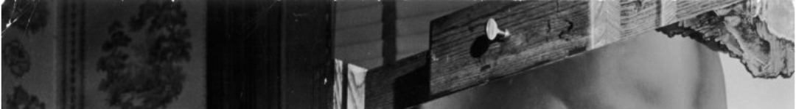

A true artist is not one who is inspired, but one who inspires others

Surrealism is not a movement. It is a latent state of mind perceivable through the powers of dream and nightmare.
Have no fear of perfection. You'll never reach it..
I don't do drugs. I am drugs.